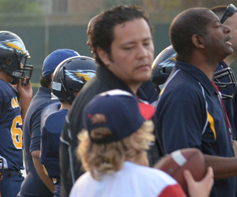
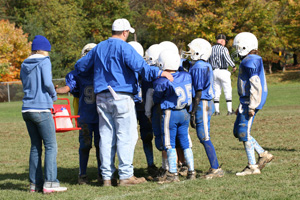

Positive Football Coach and Parent Communications
In This Article: The Parent’s Ideal Football Coach The Football Coach’s Ideal Parent
Aside from the wins and losses, there will be many satisfied youth football coaches and parents walking off the field as winners this season. They will succeed because they all worked at being excellent communicators ahead of anything directly related to the game of football. They set expectations ahead of time and have less stress. Everyone wants to return for another season.
The Parent’s Ideal Football Coach
Successful coaches understand that most parents are won over by their consistency. These coaches always demonstrate interest, caring and building confidence in the young players. They are organized and competent in both practice and game settings. They start and end practices on time.
They exhibit fairness and encourage each player to learn self-motivation and celebrate small incremental improvements. They model the attributes of restraint and respect, and they know every player and parent by name.
The Football Coach’s Ideal Parent
These parents know the best time to talk to the coach is after the game and alone, and not in front of the players and other parents. They don’t speak up in the heat of the moment or confront the coach anywhere near the football field. They keep their communications simple and direct, focusing on the concern and not anything personal about the coach.
Positive parents consistently take a constructive approach with the coach. They maintain an open mind, understanding there are always many options possible that combine the coach's interests and their own. Finally, they encourage the young athlete to communicate with the coach directly. They understand that developing independence and the ability to solve problems productively in a young person is the most important part of the game.
Related Articles
Resources
Other Articles
Related Categories